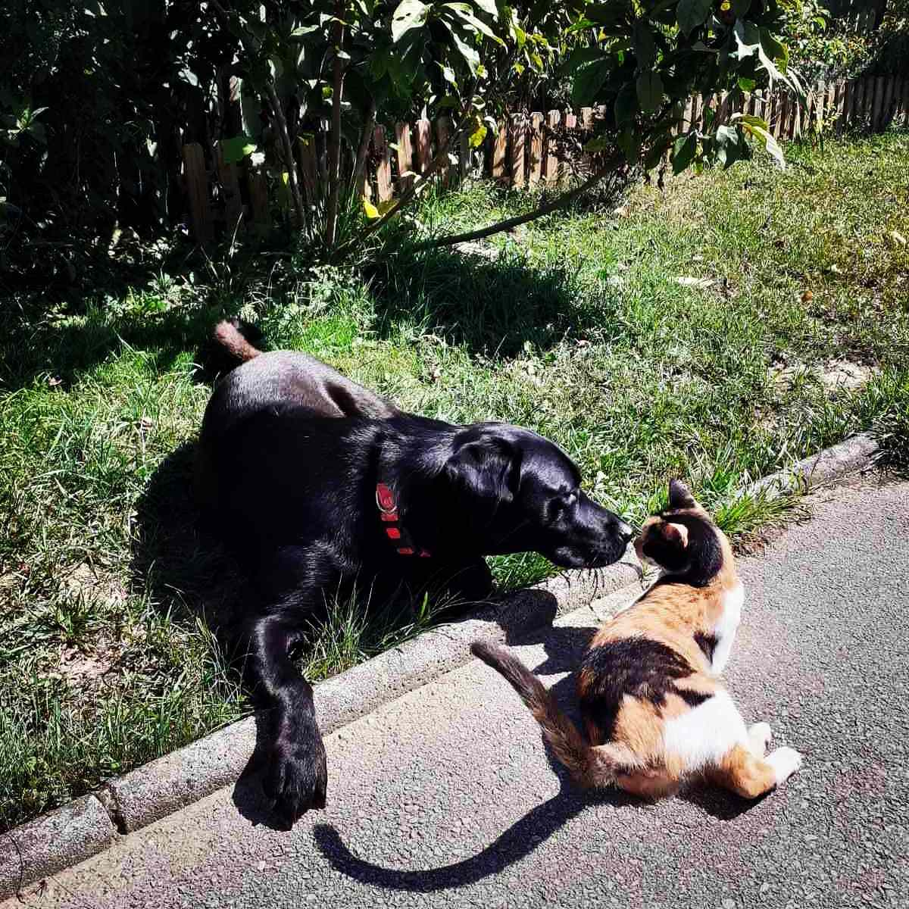

Seven years ago, my partner and I made a life-changing decision: we left the fast-paced life of the big city and moved to the countryside. It's one of the best decisions we've ever made. Life here is peaceful, fulfilling, and filled with simple pleasures. We both work in the IT field, which allows us the flexibility to enjoy the beauty and serenity of rural life.
We share our home not only with Bagi but also with three cats and two ducks, making our little homestead full of life and personality. We're also proud parents of three grown daughters and happy grandparents to two wonderful grandchildren—a girl and a boy—who bring so much joy into our lives.
We are enjoying this chapter of life to the fullest and feel incredibly grateful every day. Living close to nature, doing work we love, and being surrounded by family and animals—this is our version of happiness.